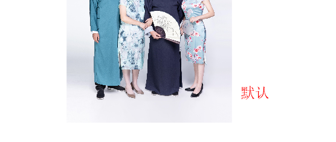
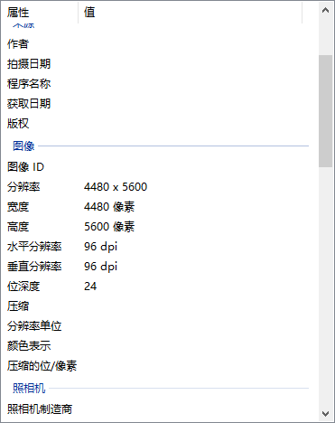
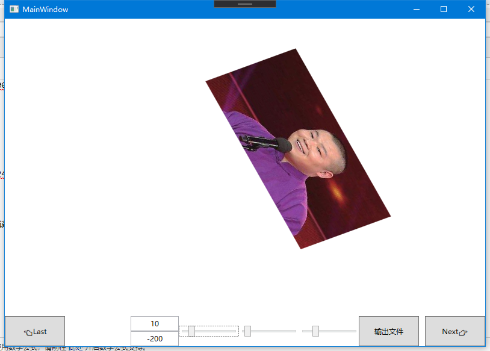
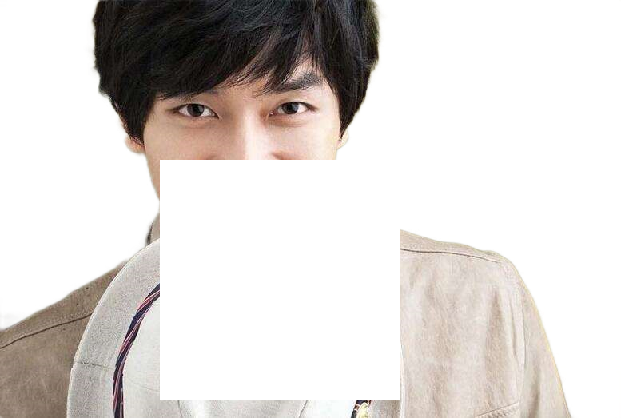

原文连接:https://www.cnblogs.com/Big-Head/p/12068230.html
WPF 中的一些图片处理方法
一，视觉处理（控件展示）
1，显示图片
Image控件展示
Xaml代码：
<Image source="/Resources/Images/1.png"/>缩放位图渲染算法
Xaml代码：
<Image Source="/Resources/Images/1.jpg" RenderOptions.BitmapScalingMode="Fant"/>
| 枚举值 | 描述 |
|---|---|
| Fant | 使用超高质量 Fant 位图缩放，虽然速度比所有其他位图缩放模式都慢，但输出质量更高。 |
| HighQuality | 使用高质量位图缩放，虽然速度比 LowQuality 模式慢，但输出质量更高。 HighQuality 模式与 Fant 模式相同。 |
| Linear | 使用线性位图缩放，虽然速度比 HighQuality 模式快，但输出质量较低。 |
| LowQuality | 使用双线性位图缩放，虽然速度比 HighQuality 快，但输出质量较低。 LowQuality 模式与 Linear 模式相同。 |
| NearesNeighbor | 使用最近邻域位图缩放，当使用软件光栅器时，该缩放提供优于 LowQuality 模式的性能。 该模式常用于放大位图。 |
| Unspecified | 使用默认位图缩放模式，即 Linear。 |
2，Image遮罩
OpacityMask
来自微软官方的说明：
获取或设置一个作为 Brush 实现的不透明蒙板，该蒙板可应用到此元素所呈现内容的任何 Alpha 通道蒙板。 这是依赖项属性。
来自个人的经验解释：
OpacityMask也是一张图片，它用来改变被它遮住的内容的显示区域,
OpacityMasK本身：有内容的区域被镂空，没有内容的区域被填充
被它遮住的控件或者画布：镂空的区域就展示，填充的区域变透明
3，图片DPI
- 图片DPI是每英寸显示的点的个数（点/英寸）
- 图片的宽像素=宽dpi*尺寸
- 图片的高像素=高dpi*尺寸
- WPF 中，所有图片在Xaml中都会被强制拉成96dpi。

4，控件的Transform
来自微软官方的说明：
Transform 定义如何将点从一个坐标空间映射或转换到另一个坐标空间。 此映射由转换 Matrix描述，该转换是包含三列 Double 值的三行的集合。
| 枚举值 | 描述 |
|---|---|
| RotateTransform | 按指定角度旋转元素。 |
| ScaleTranform | 按指定的 ScaleX 和 ScaleY 量来缩放元素。 |
| SkewTransform | 按指定的 AngleX 和 AngleY 量倾斜元素。 |
| TranslateTransform | 按指定的 X 和 Y 量移动（平移）元素。 |
Xaml代码：
<Image Width="450" Source="/Images/3.jpg">
<Image.RenderTransform>
<TransformGroup>
<TranslateTransform X="10" Y="10" />
<RotateTransform Angle="20" CenterX="200" CenterY="121"/>
<ScaleTransform ScaleX="1.5" ScaleY="1.5" CenterX="200" CenterY="121"/>
<SkewTransform AngleX="10" AngleY="10" CenterX="200" CenterY="121"/>
</TransformGroup>
</Image.RenderTransform>
</Image>
二，输出文件
1，显示图片
①，BitmapImage的保存
与Bitmap.Save()不同，需要对BitmapImage的数据转为Stream，通过文件流保存
C#代码
BitmapEncoder encoder = new PngBitmapEncoder();
encoder.Frame.Add(BitmapFrame.Create(bitmapImage));
using(var straem=new FileStream(path,FileMode.Create)){
encoder.Save(stream);
}
②，BitmapImage的Width，Height和PixelWidth,PixelHeight
Width和Height：获取位图的宽/高度（以与设备无关的单位（每个单位 1/96 英寸）为单位）。(会根据电脑DPI的更改获取到不同的值)
PixelWidth和PixelHeight：获取位图的宽/高度（以像素为单位）
③，BitmapImage与Bitmap的互相转换
同样是转为流数据，向Bitmap的构造函数传参
//BitmapImage to Bitmap
public static Bitmap GetBitmapByBitmapImage(this BitmapImage bitmapImage,bool isPng=false) {
Bitmap bitmap;
MemoryStream outStream = new MemoryStream();
BitmapEncoder enc = new BmpBitmapEncoder();
if (isPng) {
enc = new PngBitmapEncoder();
}
enc.Frames.Add(BitmapFrame.Create(bitmapImage));
enc.Save(outStream);
bitmap = new Bitmap(outStream);
return bitmap;
}
// Bitmap to BitmapImage
public static BitmapImage GetBitmapImageBybitmap(this Bitmap bitmap) {
BitmapImage bitmapImage = new BitmapImage();
try {
using (MemoryStream ms = new MemoryStream()) {
bitmap.Save(ms, System.Drawing.Imaging.ImageFormat.Png);
bitmapImage.BeginInit();
bitmapImage.StreamSource = ms;
bitmapImage.CacheOption = BitmapCacheOption.OnLoad;
bitmapImage.EndInit();
bitmapImage.Freeze();
}
}
catch (Exception ex) {
log.ErrorFormat("bitmap to BitmapImage Failed:" + ex.Message);
}
return bitmapImage;
}2，Visual和DrawingContext
①，Visual
Visual：为 WPF 中的呈现提供支持，其中包括命中测试、坐标转换和边界框计算。
层级关系：
System.Windows.Media.Visual
System.Windows.Media.ContainerVisual
System.Windows.UIElement
②，DrawingContext
DrawingContext:使用绘图、推送和弹出命令描述可视内容。
绘制方法：
DrawDrawing： 画Drawing对象
DrawEllipse: 画圆
DrawGeometry: 画几何图形
DrawGlyphRun：画文字
DrawImage： 画图
DrawLine：画线
DrawRectangle/DrawRoundedRectangle：画矩形
DrawText:画带格式的文本
DrawVideo：画视频
PushClip:推送剪切区域
③，RenderTargetBitmap
RenderTargetBitmap:将System.Windows.Media.Visual 对象转换为位图。
④，Image遮罩
和控件方式类似，在后台代码中使用Visual来展示
C#代码
RenderTargetBitmap bmp = new RenderTargetBitmap((int)img.Source.Width, (int)img.Source.Height, 96, 96, PixelFormats.Default);
DrawingVisual visual = new DrawingVisual() { OpacityMask = imgBrush };//遮罩Visual
using (DrawingContext dc = visual.RenderOpen()) {
dc.DrawImage(img.Source, new Rect(0, 0, img.Source.Width, img.Source.Height));
}
bmp.Render(visual);⑤，图像变化
同样是修改Visual的Transform
这里注意：文件渲染的Transform和前台的Transform不全相同！！！！
因为界面显示的图片大小和实际大小不一样
C#代码
RenderTargetBitmap bmp = new RenderTargetBitmap((int)img.Source.Width, (int)img.Source.Height, 96, 96, PixelFormats.Default);
DrawingVisual visual = new DrawingVisual() { Transform=img.RenderTransform };//修改Transform
using (DrawingContext dc = visual.RenderOpen()) {
dc.DrawImage(img.Source, new Rect(0, 0, img.Source.Width, img.Source.Height));
}
bmp.Render(visual);⑥，PathGeometry
来自微软官方的解释：表示一个可能由弧、曲线、椭圆、直线和矩形组成的复杂形状
LineGeometry 直线
ps：这个LineGeometry可以实现线头和线尾的圆滑笔触效果
new LineGeometry(start, end).GetWidenedPathGeometry(new Pen(Brushes.Black, 10) { StartLineCap = PenLineCap.Round, EndLineCap = PenLineCap.Round }); EllipseGeometry 圆
RectangleGeometry 矩形
⑦，抠图
通过DrawingContext的PushClip可以将指定的剪辑区域推送到绘图上下文上。
需要利用到上面的Geometry几何图形
配合一些鼠标事件可以手动实现inkcanvas和类似PS的背景橡皮擦
C#代码
RenderTargetBitmap bmp = new RenderTargetBitmap((int)img.Source.Width, (int)img.Source.Height, 96, 96, PixelFormats.Default);
DrawingVisual visual = new DrawingVisual() { OpacityMask = imgBrush };//遮罩Visual
using (DrawingContext dc = visual.RenderOpen()) {
RectangleGeometry full = new RectangleGeometry(new Rect(0,0,777,523));//全图区域
var clip= Geometry.Combine(full, new RectangleGeometry(new Rect(200,200,300,300)), GeometryCombineMode.Exclude, null);//减去一个矩形的区域
dc.PushClip(clip);//推送clip区域结果
dc.DrawImage(img.Source, new Rect(0, 0, img.Source.Width, img.Source.Height));
}
bmp.Render(visual);正方形抠图

线条抠图
⑧，裁剪
- BitmapSource中有一个方法叫做CopyPixels，复制像素点集到一个新的BitmapSource里面。可以实现裁剪
stride:位图的跨距（一行的字节数）。
pixels:表示位图图像内容的字节数组。
public static BitmapSource CutImage(BitmapSource bitmapSource, Int32Rect cut) {
//计算Stride
var stride = bitmapSource.Format.BitsPerPixel * cut.Width / 8;
//声明字节数组
byte[] data = new byte[cut.Height * stride];
//调用CopyPixels
bitmapSource.CopyPixels(cut, data, stride, 0);
return BitmapSource.Create(cut.Width, cut.Height, 0, 0, PixelFormats.Bgra32, null, data, stride);
}